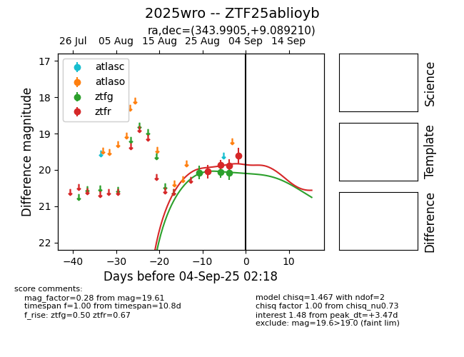

FINK: ZTF25ablioyb
Lasair: ZTF25ablioyb
ALeRCE: ZTF25ablioyb
TNS: 2025wro
YSE: 2025wro
ZTF25ablioyb (ztf,fink)
2025wro (tns,yse)
equatorial (ra, dec) = (343.9905,+9.08921)
galactic (l, b) = (81.2217,-44.23210)

last ztfg=20.07, ztfr=19.61
3 ztfg, 4 ztfr detections